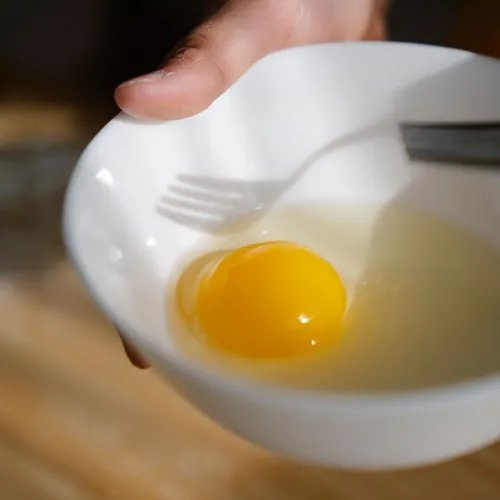
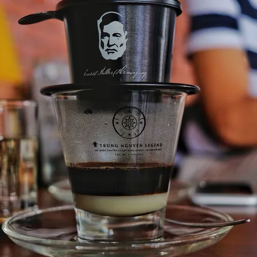
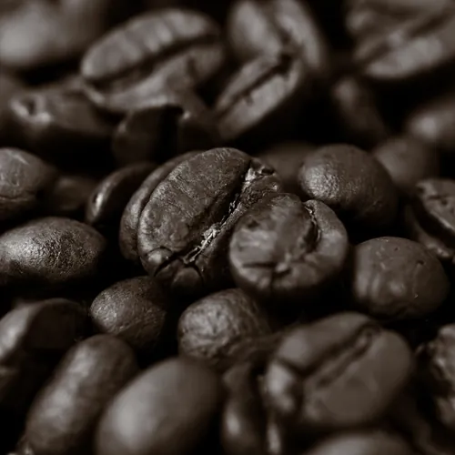
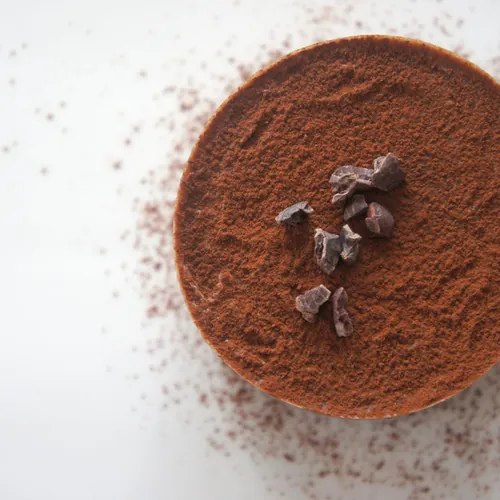
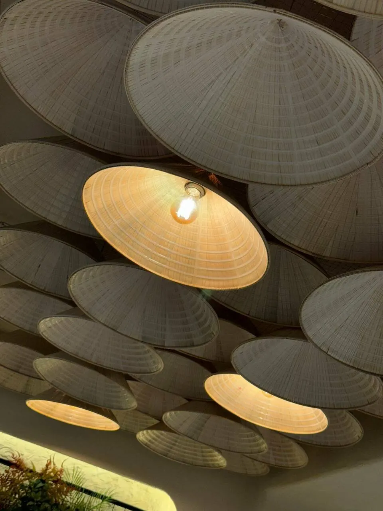
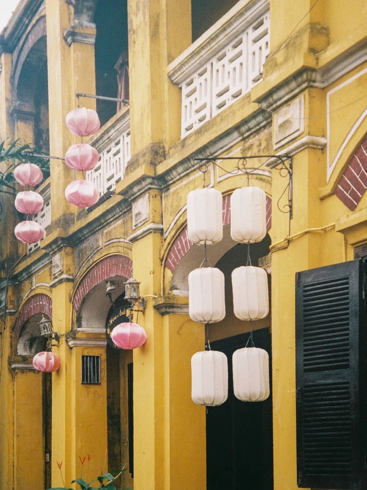
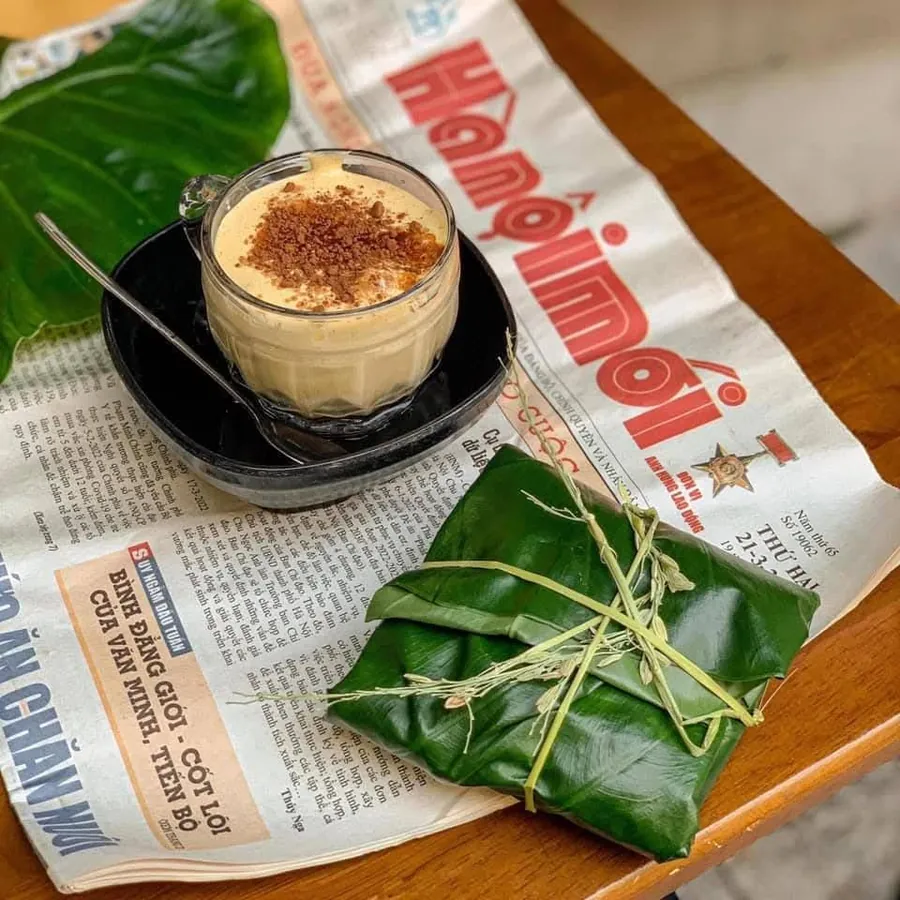
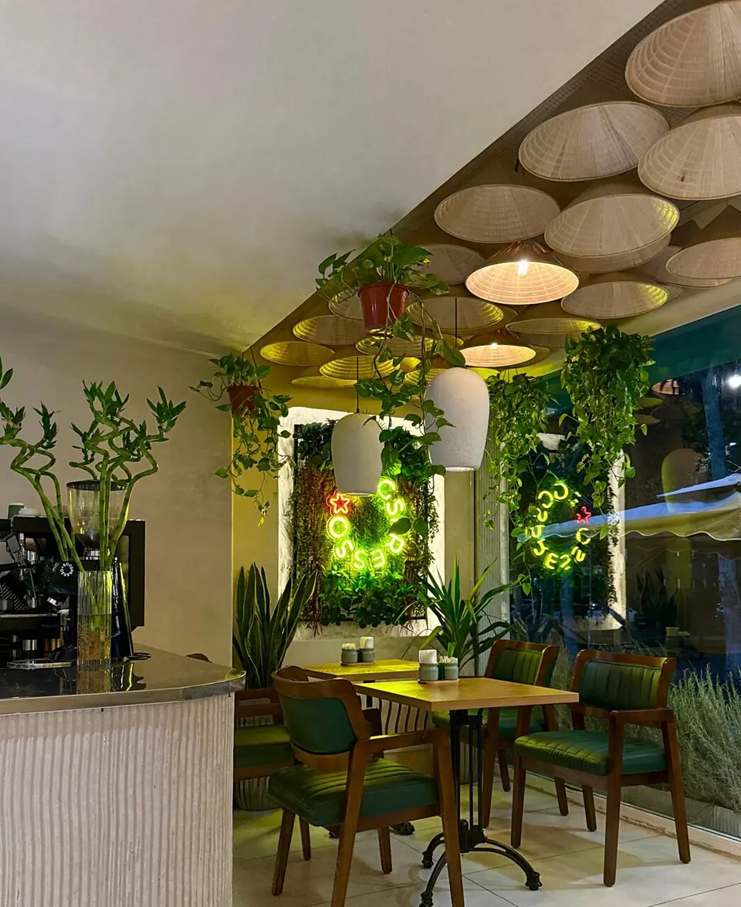
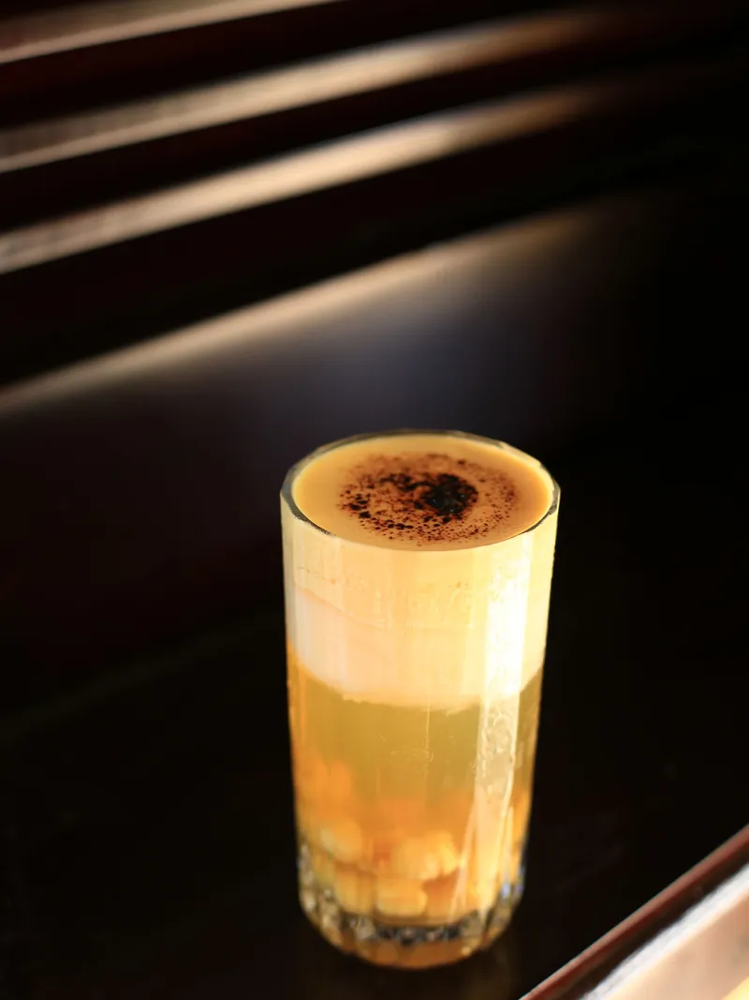
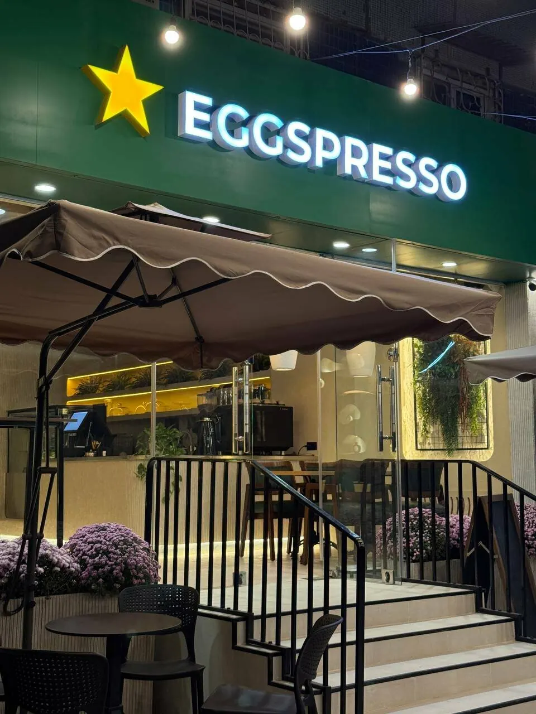

Cà phê trứng
Первый вьетнамский яичный кофе в Узбекистане
Желток, взбитый со сгущёнкой, ложится тёплым кремом на крепкий кофе из фина. Как в Ханое с 1946 года, только на Яхьё Гулямова, 38.

Желтоксвежий, отделён от белка
Сгущёнкавместо молока, как в 1946
Робустакрепкий кофе из фина
Какаощепоткой сверху
Xin chào!
Кусочек старого Ханоя в центре Ташкента
Eggspresso открылся осенью 2025 года и первым в Узбекистане начал варить вьетнамский яичный кофе. Под потолком висят сотни соломенных шляп нон-ла, по стенам вьётся зелень, в зале тихая музыка.
Сюда приходят на завтрак с семи утра, работают с ноутбуком у розеток и встречаются с друзьями до полуночи.




Cà phê Hà Nội

Hết sữa
Почему кофе с яйцом
В 1946 году в Ханое шла война, и свежего молока не было: на дверях лавок висели таблички «Hết sữa», «молока нет». Бармен отеля Metropole Нгуен Ван Жанг взбил вместо него желток с сахаром и получил густой сладкий крем. Его семья до сих пор варит этот кофе в старом квартале.
Как десерт
Крем плотнее молочной пены. Гости сравнивают его с тирамису и заварным кремом.
Сытно
В желтке есть белок и витамины A, D, B12. Одна чашка заменяет пирожное.
Крепкий кофе снизу
Под кремом густой кофе из фина, вьетнамского фильтра. Он не теряется под сладким слоем.
Как пить
Сначала попробуйте крем ложкой, потом перемешайте с кофе.
Pha chế
Как его готовят у нас
Четыре шага и около пяти минут.
Khách quen
Наши гости
«Очень по-вьетнамски!»
Отзыв на Яндекс Картах«Очень стильное и атмосферное заведение, вкусная матча и десерты, приятная негромкая музыка, много зелени»
Елизавета Н.«Кофе с яйцом оказался на удивление вкусным»
Trupthii«Внутри так красиво украшено цветами, как будто находишься в уютной гостиной»
Ольга М.«Это напоминает нам о доме!»
Отзыв на Яндекс Картах«Самая лучшая кофейня. И десерты вкусные, и кофе очень вкусный»
Малика К.«Хорошее место, чтобы спокойно посидеть с друзьями или семьёй»
Азамат А.«Отличный кофе, уютное место и фирменные вьетнамские кофейные блюда»
Christoph M.
Hẹn gặp bạn
Как нас найти
Открыто до 00:00
- Адрес
- Ташкент, Ц-1, улица Яхьё Гулямова, 38, первый этаж. Рядом сквер Амира Темура.
- Часы
- Каждый день с 07:00 до 00:00
- Телефон
- +998 90 159 98 88
